Вторая великая экспедиция началась вскоре после возвращения из Незера. Эфритонцы отправились к порталу Края, прошли через подготовительный путь, победили дракона после тяжёлого сражения и исследовали города Энда. Главными трофеями стали драконье яйцо и элитры.
§ 1. Новая цель после возвращения из Незера
В 1245 году завершилась Незерская кампания, но период больших экспедиций для Эфритонии на этом не закончился. Почти сразу началась подготовка к следующей цели — путешествию в Энд. Если предыдущий поход был связан с крепостью и стержнями ифрита, то теперь главной задачей становилось достижение портала Края и встреча с драконом.
Подготовка к новой экспедиции потребовала отдельного этапа. Сначала нужно было собрать необходимые вещи, подготовиться к дороге и добраться до портала. Фотографии `beforeend` сохраняют этот промежуток между двумя великими походами и показывают, что экспедиция не возникла внезапно: ей предшествовала последовательная подготовка.
В историческом отношении Эндская кампания продолжила линию, начатую в Незере. Эфритония снова отправилась за пределы привычного мира, но теперь перед участниками стояла другая задача — не добыча стержней в крепости, а сражение с главным существом измерения Края.
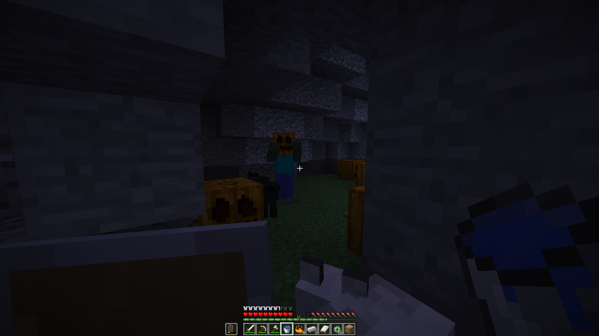
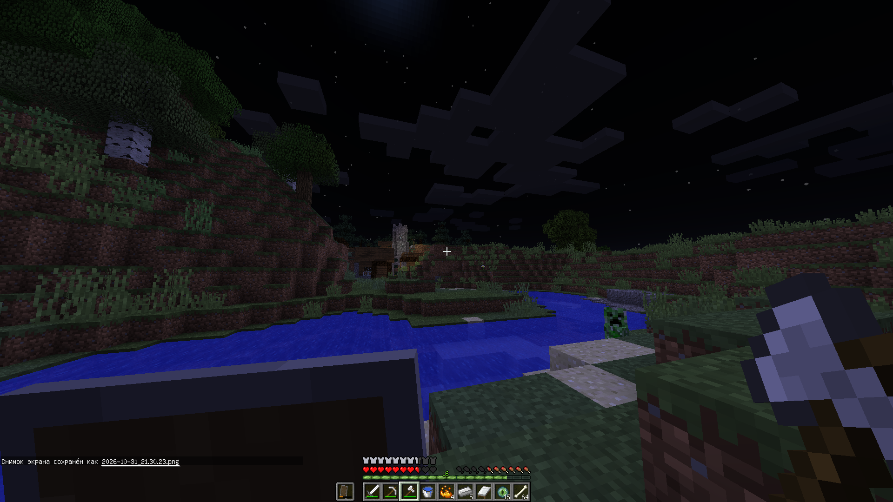
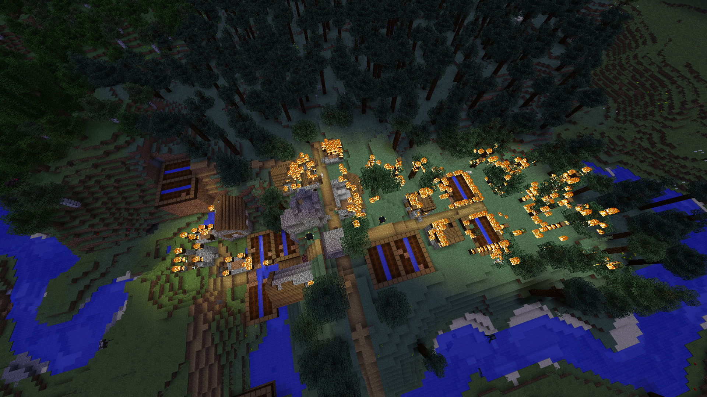
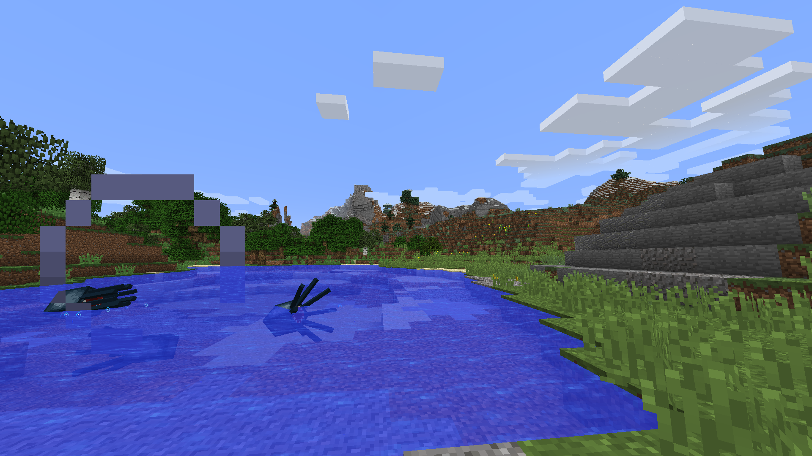
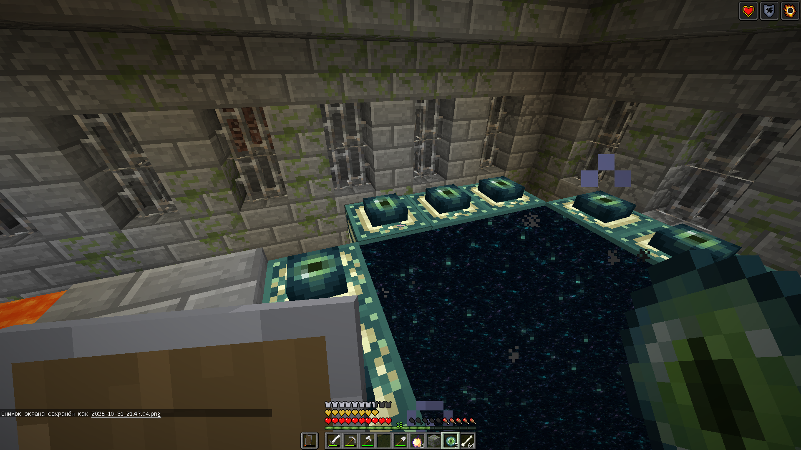
§ 2. Дорога к порталу Края
Путь к порталу стал частью самой кампании. По сведениям Эфритонии, одна из встреченных деревень готовилась напасть на государство. В ответ деревня была сожжена; вместе с ней был подожжён окружающий лес. В летописи этот эпизод записан как событие дороги к Эндской экспедиции и как решение, принятое участниками на основании имевшихся у них сведений.
После этого путь продолжился. Сохранившиеся фотографии показывают отдельные моменты перед входом в Энд. Они помогают восстановить последовательность экспедиции: подготовка сменилась дорогой, а дорога привела участников к порталу, за которым находилось измерение Края.
Точная продолжительность отдельных переходов и календарные даты каждого эпизода не сохранились. Поэтому период кампании в архиве обозначен общими рамками 1245–1250 годов, а не вымышленным расписанием по дням.
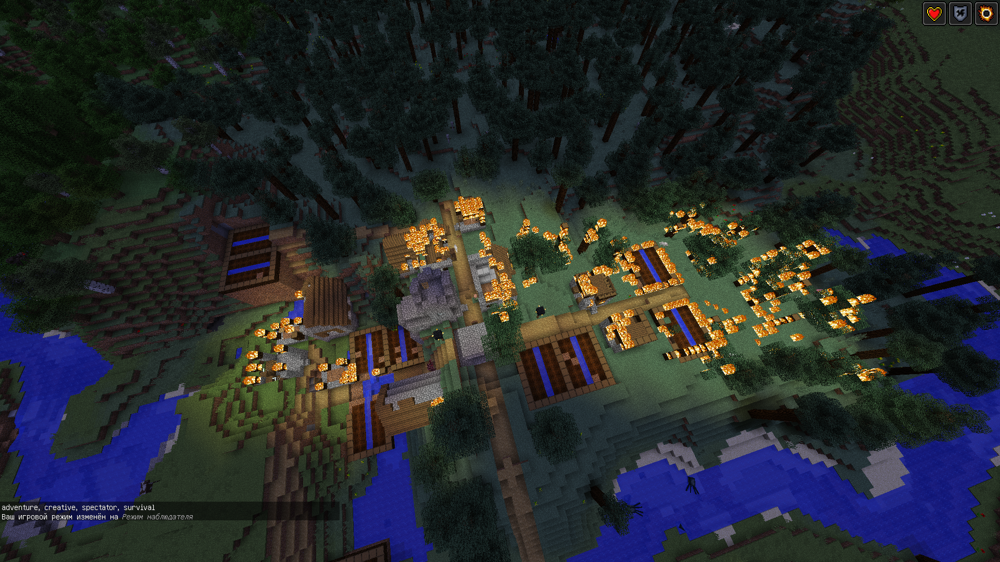
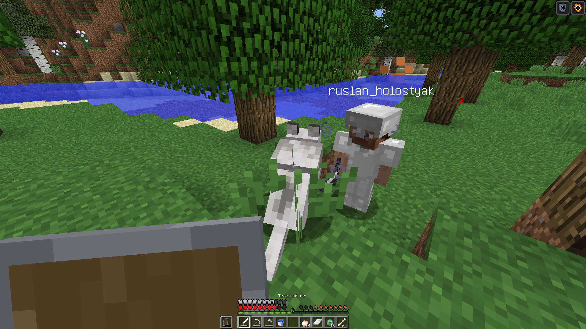
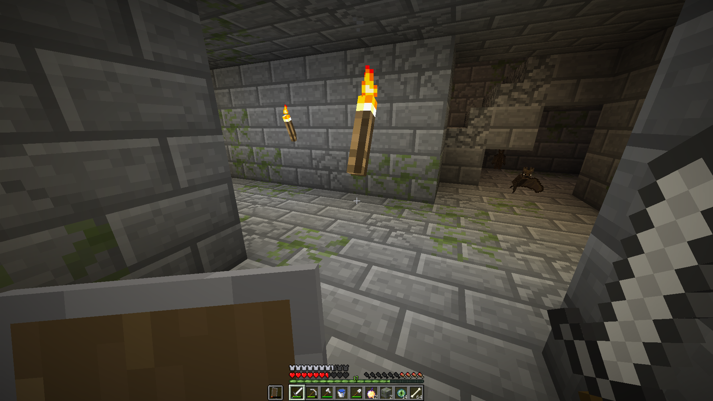
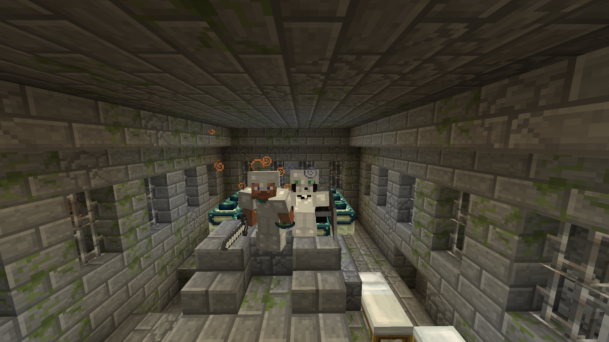
§ 3. Сражение с драконом Края
После достижения портала участники оказались в Энде и вступили в бой с драконом Края. Это стало центральным сражением второй великой экспедиции. По воспоминаниям создателей, победа далась с большим трудом. Сражение требовало от участников выдержки и совместных действий: только после его завершения можно было считать главную задачу похода выполненной.
Итогом битвы стало получение драконьего яйца. Для Эфритонии это не просто редкий предмет, а символ завершения одного из самых значительных испытаний ранней истории. Яйцо вошло в число государственных реликвий и сегодня упоминается среди важнейших предметов, связанных с великими экспедициями.
Фотографии этой части летописи размещены непосредственно внутри рассказа, чтобы читатель мог переходить от описания подготовки к кадрам самого измерения и сражения. По мере уточнения снимков их подписи можно будет сделать точнее, не меняя структуру главы.
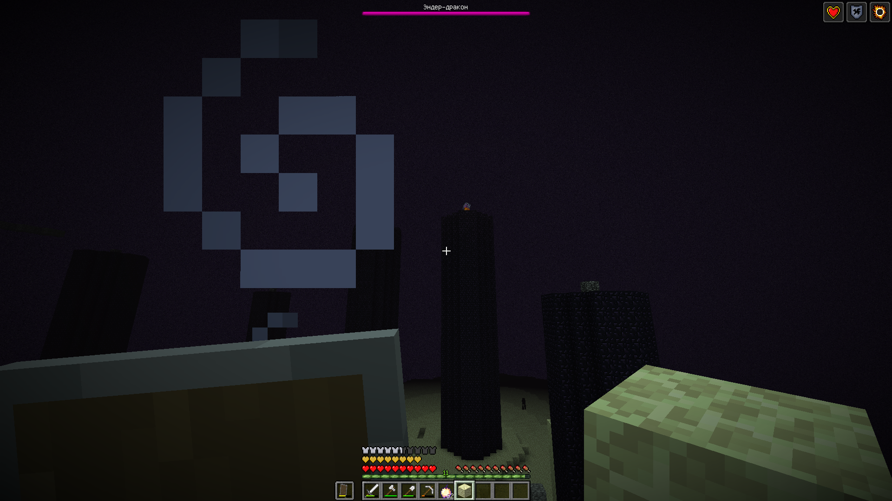
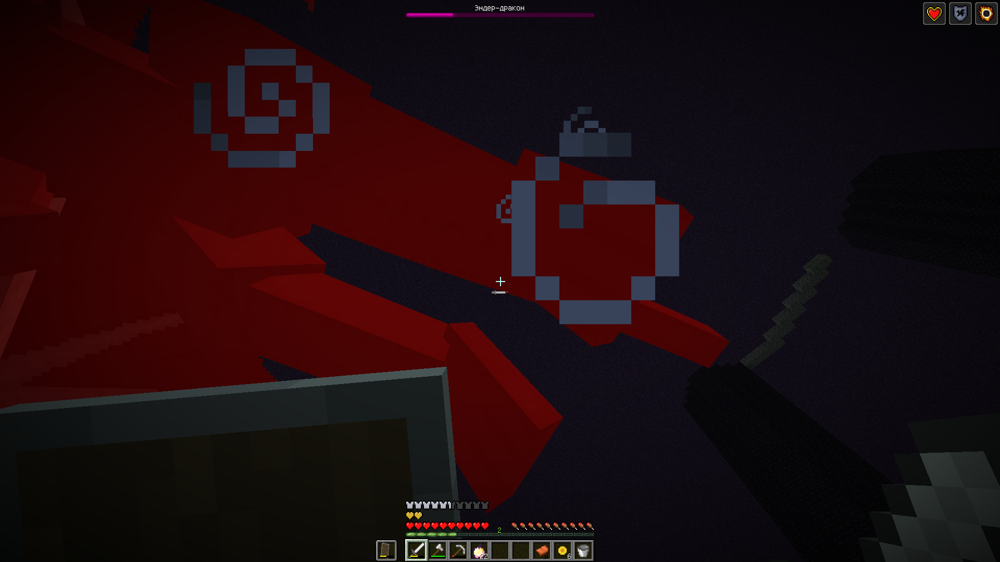
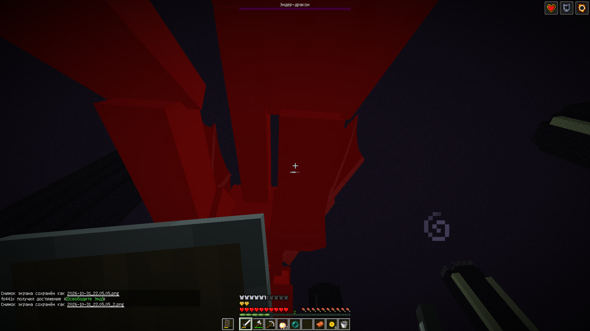


§ 4. Города Края и поиск реликвий
Победа над драконом не стала немедленным концом экспедиции. После сражения эфритонцы отправились исследовать города Края. Эта часть похода была связана уже не с центральной битвой, а с изучением построек и поиском ценных предметов, которые могли пригодиться государству.
В городах Края участники получили элитры и множество ресурсов. Элитры стали ещё одной важной реликвией Эфритонии. Вместе с драконьим яйцом и стержнями ифрита они образовали памятный набор трофеев, связанный с двумя великими экспедициями.
Сохранившиеся кадры городов Края особенно важны для фотоархива: они фиксируют не только сражение с драконом, но и исследовательскую часть похода — посещение построек и получение добычи.


§ 5. Завершение экспедиционного периода
К 1250 году Эфритония завершила масштабные экспедиции в Незер и Энд. Походы принесли государству важные ресурсы и реликвии, однако после них страна переключилась на внутреннее развитие. Началось восстановление и расширение жилых районов, строительство новых домов, пшеничных ферм и других хозяйственных сооружений.
В этом переходе заключается историческое значение Эндской кампании. Она стала последней из двух больших экспедиций раннего периода и открыла следующий этап — развитие собственной территории. В дальнейшем государству пришлось столкнуться с новой угрозой уже не в дальнем измерении, а непосредственно на родной земле: войной с разбойниками в 1270 году.
Главное об Эндской кампании
- 1245 год — начало подготовки к новой экспедиции после возвращения из Незера.
- На пути к порталу была сожжена деревня, которую Эфритония считала готовившей нападение; лес вокруг неё также был подожжён.
- В Энде состоялось тяжёлое сражение с драконом Края.
- После победы государство получило драконье яйцо.
- В городах Края были добыты элитры и другие ресурсы.
- К 1250 году великие экспедиции завершились, начался период внутреннего восстановления.
Точная дата победы над драконом и подробности каждого этапа исследования городов Края пока не установлены.